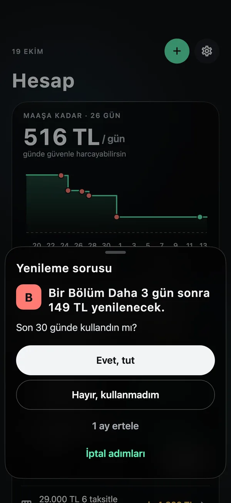

iPhone'da aboneliklerini nasıl görürsün
Kısa cevap: Ayarlar'ı aç, en üstteki adına dokun, Abonelikler'e gir. Apple üzerinden başlattığın bütün abonelikler orada, fiyatı ve yenileme tarihiyle. Listede çıkmayanlar için de aşağıda yol var.
Son güncelleme: 15 Kasım 2026
Ayarlar'dan: en hızlı yol
- Ayarlar'ı aç.
- En üstteki adına (Apple hesabına) dokun.
- Abonelikler'e dokun.
- Etkin listesinde her aboneliğin adı, fiyatı ve yenileme tarihi görünür; bitenler Süresi Doldu bölümünde durur.
Bir aboneliğe dokunursan planı değiştirebilir ya da iptal edebilirsin. iOS sürümüne göre ekranlar biraz farklı görünebilir.
App Store'dan
- App Store'u aç.
- Sağ üstteki profil resmine dokun.
- Abonelikler'e dokun.
Listede görünmeyen abonelikler
Bu liste yalnız Apple üzerinden ödediğin abonelikleri gösterir. Şunlar orada çıkmaz:
- Hizmetin kendi sitesinden kartla başlattığın abonelikler.
- Telefon operatörü faturana yazılanlar.
- Google Play ya da başka bir mağazadan aldıkların.
- Başka bir Apple Kimliğiyle başlatılanlar.
Onları bulmak için:
- Kart ekstresine ve banka hareketlerine bak; aynı tutar aynı günlerde tekrar ediyorsa bir abonelik olabilir.
- E-posta kutunda "makbuz", "fatura" ve "yenileme" sözcüklerini ara.
- Android telefonun varsa: Play Store › profil resmi › Ödemeler ve abonelikler › Abonelikler.
Aboneliği iptal etmek istiyorsan
İptal de aynı Apple ekranından yapılır: Abonelikler'de aboneliğe dokun, "Aboneliği İptal Et"e bas ve onayla. İptal ettiğinde genelde ödediğin dönemin sonuna kadar kullanmaya devam edersin; ayrıntı hizmetin koşullarındadır. Karttan ya da operatör faturasından ödenen abonelikleri hizmetin kendisinden ya da operatörden iptal edersin.
Subsi iptal etmez. Subsi bir iptal aracı değil: senin yerine iptal etmez, hesaplarına girmez. Aboneliklerini tek listede toplar ve yenilemeden önce sorar. İptal kararı ve işlemi her zaman sende, Apple'da, Google'da ya da hizmetin kendisinde.
Hepsini tek listede tutmak
Apple'ın listesi yalnız Apple'a ödediklerini gösterir; kartla ve başka yerlerden alınanlar ayrı yerlerde kalır. Subsi hepsini tek listede toplar:
- Aboneliklerin ekran görüntüsünü ya da kart ekstresinin PDF'ini ver; Subsi bulduklarını gösterir, doğru olanları sen seçersin. Okuma telefonda yapılır.
- Yenilemeden günler önce yerel bildirim gelir; "Son 30 günde kullandın mı?" sorusunu sana sorar.
- Fiyatı artanlar zamlı olarak işaretlenir, yılda ne kadar fark ettiği görünür.
- Bankana bağlanmaz, hesap ve giriş istemez; her şey telefonunda kalır.

Subsi iPhone, iPad ve Android'de. Tek seferlik satın alma; abonelik, reklam ve uygulama içi satın alma yok.
Sık sorulanlar
Abonelikler ekranım boş, neden?
Bu Apple hesabıyla başlattığın abonelik yoksa liste boş olur. Başka bir Apple Kimliğiyle ya da doğrudan kartla aldığın abonelikler burada görünmez.
Süresi dolan aboneliği tekrar görebilir miyim?
Evet. Abonelikler ekranında Etkin listesinin altında Süresi Doldu bölümü var; oradan aboneliği yeniden başlatabilirsin.
Subsi aboneliklerimi iptal eder mi?
Hayır. Subsi iptal etmez; neyin ne zaman yenileneceğini gösterir ve yenilemeden önce sorar. İptali Apple'da, Google'da ya da hizmetin kendisinde sen yaparsın.
Android'de aboneliklerimi nasıl görürüm?
Play Store'u aç, profil resmine dokun, Ödemeler ve abonelikler › Abonelikler'e gir.
İlgili: Subsi, abonelik takip uygulaması · Maaştan günlük limit nasıl hesaplanır · Destek